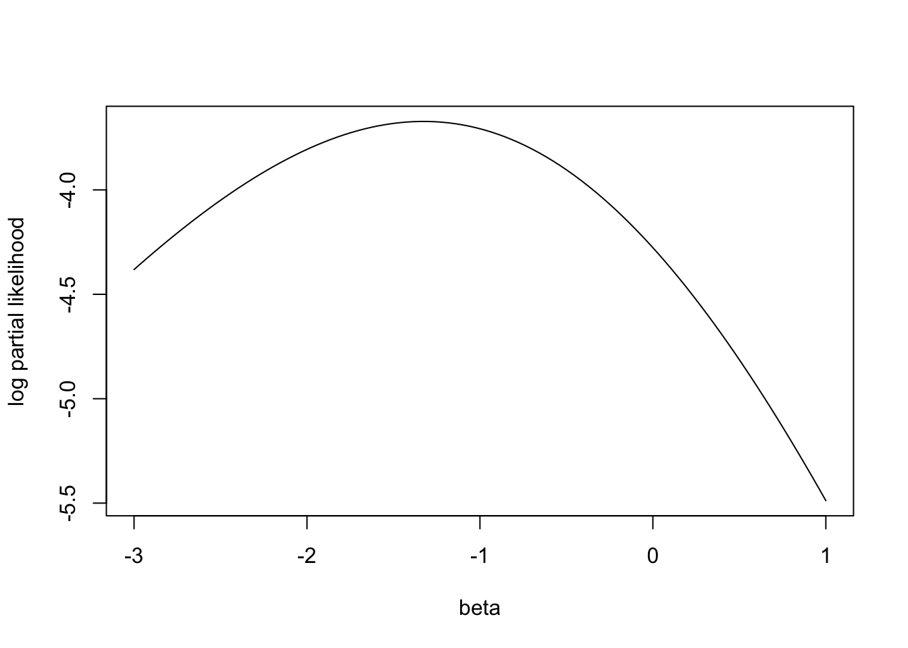

5 Regression Analysis Using the Proportional Hazards Model
5.1 Covariates and nonparametric Survival Models
As mentioned in last chapter, Lehmann alternative \(S_1(t)=[S_0(t)]^{\psi}\) can be re-expressed in terms of the hazard functions, yielding the proportional hazards assumption,
\[h_1(t)=\psi h_0(t)\]
Extend the model to include covariate information in a vector \(z\) as follows:
\[\psi = e^{z\beta}\]
We can model this by partial likelihood, which was initially developed by D.R. Cox (1972), so it is often referred to as the Cox proportional hazards model
5.2 Comparing Two Survival Distributions Using a Partial Likelihood Function
Partial likelihood does not require the assumptions about the survival distributions (parametric survial distributions), which is required by the standard likelihood method in section 2.6.
Under the proportional hazards model, assuming one single binary covarite \(z\), the hazard function for the i-th subject at the j-th failure time is
\[h_i(t_j)=h_0(t_j)\psi_i\text{, and }\psi_i=e^{z_i\beta}\]
, where
- i is the index of subject, \(i=1,...,n\), with n being the sample size
- j is the index of failure time, \(j=1,...,D\), with D being the number of failure times
- \(z_i\) is the covariate (the simple case: \(z_i=1\) when i-th subject in experimental group, or \(z_i=0\) when i-th subject in the control group)
- \(\beta\) is the effect size for the covariate
Consider the first failure time \(t_1\) and we have one failure at \(t_1\), the probability that Patient \(i\) is the failure is
\[p_1=p_1(\text{subject i fails})=\frac{h_i(t_1)}{\sum_{k \in R_1}h_k(t_1)}=\frac{h_0(t_1)\psi_i}{\sum_{k\in R_1}h_0(t_1)\psi_k}=\frac{\psi_i}{\sum_{k\in R_i}\psi_k}\]
, where
- \(R_1\) is the set of subjects at risks at time \(t_1\) (i.e., all the subjects before the first failure)
A key fact here is that the baseline hazard \(h_0(t_1)\) cancels out of the numerator and denominator.
We can repeat this calculation for the second failure time \(t_2\) among the set \(R_2\), which is the \(R_1\) excluding the failure one and also the censored ones between \(t_1\) and \(t_2\). So the partial likelihood is
\[L(\psi)=p_1p_2...p_D\]
Consider the synethtic data in section 4.1,
library(survival)
tt = c(6, 7, 10, 15, 19, 25)
delta = c(1, 0, 1, 1, 0, 1)
trt = c(0, 0, 1, 0, 1, 1) ## group 0 or 1
summary(survfit(Surv(tt,delta)~1))## Call: survfit(formula = Surv(tt, delta) ~ 1)
##
## time n.risk n.event survival std.err lower 95% CI upper 95% CI
## 6 6 1 0.833 0.152 0.583 1
## 10 4 1 0.625 0.213 0.320 1
## 15 3 1 0.417 0.222 0.147 1
## 25 1 1 0.000 NaN NA NAAt the first failure time, \(t_1=6\) and \(R_1\) included six subjects at risk. Considering subject 1, 2, and 4 are in the control group (\(z=0\)) and subject 3, 5, and 6 are in the experiment group (\(z=1\)), we can have \[\psi_1=\psi_2=\psi_4=e^{0*\beta}=1\]
, and
\[\psi_3=\psi_5=\psi_6=e^{1*\beta}=\psi\]
We observed the first subject (subject 1) failed at time 6, then
\[p_1=\frac{1}{3\psi+3}\]
Similarly, at the second failure time (\(t_2=10\)), the \(R_2\) has 4 subjects at risk, excluding subject 1 failed in the first failure time and subject 2 censored at time 7. Subject 3 failed, and its probability is
\[p_2=\frac{\psi}{3\psi+1}\].
Similarly, we can get
\[p_3=\frac{1}{2\psi+1}\text{ and }p_4=1\]
So the partial likelihood is
\[L(\psi)=p_1p_2p_3p_4=\frac{\psi}{(3\psi+3)(3\psi+1)(2\psi+1)}\]
Plug in \(\psi=e^{\beta}\) and consider log partial likelihood, we can get
\[l(\beta)=\beta-ln(e^\beta+3)-ln(3e^\beta+1)-ln(2e^\beta+1)\]
The maximum partial likelihood estimate is
\[\hat{\beta}_{MPLE}=arg max_\psi l(\beta)\]
, which is independent of the baseline hazard function \(h_0(t)\)
plsimple = function(beta){
psi = exp(beta)
l = beta-log(3*psi+3)-log(3*psi+1)-log(2*psi+1)
return(l)
}
## fnscale=1 means the optim will find the maximum
result = optim(par=0, fn=plsimple, method="L-BFGS-B", control=list(fnscale=-1), lower=-3, upper=1)
### MPLE
result$par## [1] -1.326129plsimple(result$par)## [1] -3.671981plsimple(0)## [1] -4.276666betas = seq(-4,1.2,length.out=100)
plot(betas, plsimple(betas), type="l", xlab="beta", ylab="log partial likelihood")
points(result$par, plsimple(result$par), col="blue", pch=16)
points(0, plsimple(0), col="red", pch=16)
5.3 Partial Likelihood Hypothesis Tests
Three forms of test of \(H_0: \beta=0\), which they yield similar results.
- the score function, the first derivative of the log likelihood, \(S(\beta)=l'(\beta)\)
- the information function, minus the derivative of the score function, \(I(\beta)=-S'(\beta)=-l''(\beta)\), where \(l''(\beta)\) is also called Hessian
Plug in parameter estimate \(\hat{\beta}\) into information function, we can get observed information
5.3.1 The Wald Test
we have the MPLE \(\hat{\beta}\), we can get the observed information
\[I(\hat{\beta})=-l''(\hat{\beta})\]
The variance of \(\hat{\beta}\) is approximately
\[var(\hat{\beta})=1/I(\hat{\beta})\text{ or }se(\hat{\beta})=1/\sqrt{I(\hat{\beta})}\]
The test can be done by
\[\hat{\beta}/se(\hat{\beta}) \sim N(0,1)\text{ or } \hat{\beta}^2 \sim \chi^2_{df=1}\]
5.3.2 The Score Test
Evaluate the score and inofrmation at the null hpyothesis value of \(\beta=0\)
\[S(\beta=0)/\sqrt{I(\beta=0)} \sim N(0,1)\]
The score test is equivalent to the log-rank test. It can be carried out without finding the maximum likelihood estimate \(\hat{\beta}_{MPLE}\)
5.3.3 The likelihood Ratio Test
\[2[l(\beta=\hat{\beta})-l(\beta=0)] \sim \chi^2_1\]
The key advantage of this test is it is invariant to monotonic transofrmations of \(\beta\)
Continue with the example above
result.cox = coxph(Surv(tt, delta)~trt)
summary(result.cox) ## provides the results of these three tests## Call:
## coxph(formula = Surv(tt, delta) ~ trt)
##
## n= 6, number of events= 4
##
## coef exp(coef) se(coef) z Pr(>|z|)
## trt -1.3261 0.2655 1.2509 -1.06 0.289
##
## exp(coef) exp(-coef) lower .95 upper .95
## trt 0.2655 3.766 0.02287 3.082
##
## Concordance= 0.7 (se = 0.116 )
## Likelihood ratio test= 1.21 on 1 df, p=0.3
## Wald test = 1.12 on 1 df, p=0.3
## Score (logrank) test = 1.27 on 1 df, p=0.3## score test
#install.packages("numDeriv")
library(numDeriv)
### calculate the S(beta=0)
beta0 = grad(func=plsimple, x=0)
### calculate the information
var0 = -hessian(func=plsimple, x=0)
beta0^2/var0## [,1]
## [1,] 1.273694pchisq(beta0^2/var0, df=1, lower.tail=F)## [,1]
## [1,] 0.2590748### Wald test
### calculate the information function at beta_MPLE
-hessian(func=plsimple, x=result$par)## [,1]
## [1,] 0.639117### calculate the variance
1/(-hessian(func=plsimple, x=result$par))## [,1]
## [1,] 1.564659### calculate the test statistics
result$par^2*(-hessian(func=plsimple, x=result$par))## [,1]
## [1,] 1.123963### likelihood ratio statistics
l_full = plsimple(result$par)
l_reduce = plsimple(0)
2*(l_full-l_reduce)## [1] 1.209369Two additional output are often useful. The first one is statistic “r-squared” (or Pseudo \(R^2\)),
\[R^2_{Cox\&Snell}=1-(\frac{L(0)}{L(\hat{\beta})})^{2/n}=1-e^{2/n[l(0)-l(\hat{\beta})]}\]
\[R^2_{Nagelkerke}=\frac{R^2_{Cox\&Snell}}{1-e^{2/n*l(0)}}\]
, where \(l()\) is the log-partial likelihood function and \(L()\) is the partial likelihood function
### r-squared (which is not included in the current version of survival R package: see https://stackoverflow.com/questions/56071385/r-squared-missing-from-output-of-coxph)
CSR2 = 1-exp((2/length(tt))*(l_reduce-l_full))
R2max = 1-exp((2/length(tt))*(l_reduce))
NKR2 = CSR2/R2max
CSR2## [1] 0.1825467R2max## [1] 0.7596251NKR2## [1] 0.2403116The second one is Concordance index, or c-index, or Harrell’s C, a measure of the predictive discrimination of a covariate.
5.4 The Partial Likelihood with Multiple Covariates
Extend from single binary covariate to multiple covariates,
\[h_i(t_j)=h_0(t_j)\psi_i\text{ and }\psi_i=e^{z_i'\beta}\]
, where - \(i\) is the index of subject, \(i=1,...,n\) - \(j\) is the index of failure time, \(j=1,...,D\) - \(\psi_i\) is the hazard ratio (relative to the baseeline hazard) for subject i - \(z_i\) is a vector of covariates with the length of p - \(\beta\) is a vector of effect sizes with the length of p
The “risk set”, the set of all individuals at risk, at j-th failure time, is devoted by \(R_i\). The partial likelihood is
\[L(\beta)=\prod_{j=1}^D\frac{h_0(t_j)\psi_{(j)}}{\sum_{k \in R_j}h_0(t_j)\psi_k}=\prod_{j=1}^D\frac{\psi_{(j)}}{\sum_{k \in R_j}\psi_k}\] , where \(\psi_{(j)}\) is the hazard ratio for the individual who experienced the failure event at time \(t_j\). The function is called a partial likelihood because it lacks factors for the censored observations.
The log partial likelihood is
\[l(\beta)=\sum_{j=1}^D[z_{(j)}'\beta-log(\sum_{k \in R_j}e^{z_k'\beta})]\] , where \(z'_{j}\) is the covariate vector of the individual who experiences the event at \(t_j\)
The score function, \(S(\beta)\), is the first derivative of \(l(\beta)\), which has p components (p-length vector). In the special case where \(z_i\) is a single binary covariate, \(S(\beta=0)\) is the log-rank statistics.
The observed information matrix, \(I{\beta}\) is the negative Hessian matrix, where Hessian matrix is the second derivative of the log-likelihood with all pairwise combination of the covariates (\(p \times p\) matrix).
The Wald, score, and likelihood ratio test statistics of \(H_0:\beta=0\) are
\[\chi_w^2=\hat{\beta}'I(\beta)\hat{\beta}\]
\[\chi_S^2=S'(\beta=0)I^{-1}(\beta=0)S(\beta=0)\]
\[\chi_l^2=2[l(\beta=\hat{\beta})-l(\beta=0)]\]
They are all asymptotically chi-square random variables with p-1 degrees of freedom.
5.5 Estimating the Baseline Survival Function
An estimate of the baseline hazard function is given by
\[h_0(t_j)=\frac{d_j}{\sum_{k\in R_j}e^{z_k\hat{\beta}}}\]
The baseline survival function is
\[S_0(t)=exp[-H_0(t)]\]
, where \(H_0(t)\) is a cumulative sum of the estimated hazards \(h_0(t_j)\) for \(t_j \le t\).
The survival function for a particular individual with covariate value z is
\[S(t|z)=[S_0(t)]$^{exp(z\hat{\beta})}\]
basehaz(result.cox, centered=F)## hazard time
## 1 0.2633999 6
## 2 0.2633999 7
## 3 0.8200350 10
## 4 1.4732003 15
## 5 1.4732003 19
## 6 5.2396357 25### return the cumulative hazard